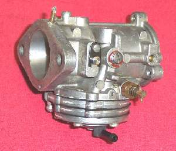
¶ Pumper carbs, also called Diaphragm or Pressure Pulse Carburetors, are used primarily on chain saws, weed eaters and other small engines. The unique thing about pumper carbs is that they can work in any position because they have no float bowel and they do have a fuel pump. This is handy for an engine that is used in a lot of different positions, like a chain saw. They were used a lot on Go-Kart engines too.
Pumper carbs were also used a lot in snowmobiles in the 1960s and 70s, but have now been pretty much fazed out and replaced by regular float bowel carbs. I have never seen one on a stock motorcycle but I have seen people use them as a replacement carb. In 1969-1971 I ran across a number of articles in several different motorcycle magazines about adapting a pumper carb to a motorcycle. The people writing these articles felt there were many advantages to these carbs, especially when used to replace the British Amal carbs used on Triumphs and BSAs. Apparently no one else did, because you just don't hear of anyone using them on motorcycle engines anymore. If you want to try one on your engine See: "Days of Yore"
The reason they liked pumper carbs is this. Float bowel carbs use a venturi, a narrowing of the carb throat, to create a vacuum above the main and idle jet openings in the carb throat. This sucks fuel out of the float bowel and mixes it with air. The pumper carb uses a fuel pump to push the fuel through the jet passages and into the throat of the carb, to mix with the air. The pumper carb, they said, has no venturi and is straight all the way through. The fuel pump on the pumper carb can really push through the fuel to a fuel hungery engine. This made for easier starting and better mid-range performance. Plus, because of the hi and low speed adjustment needles, you can easily tune the carb for your particular engine.
That's the theory, anyway. However, I see a venturi in all the pumper carbs. The way I understand it, the pumper carb uses the vacuum at the venturi to control when the fuel, under pressure, enters the carb throat. The float bowel carb uses the vacuum in the venturi to suck the fuel from the float bowel up into the carb throat.
If you really want to play with one I imagine You could still get them as I think they are still used in two stroke Ultra-Light airplane engines. You will have to run a line from the intake manifold, crankcase, or exhaust pipe to get a vacuum pulse to run the pump. Also, you must prime the engine when you first start it, to get the pump going. After that, you start it normally, with the choke. A fuel return line, from the carb to the fuel tank, may be needed too. I've never run one on a motorcycle, just snowmobiles, chain saws and weed eaters. Now-a-days I make every effort to avoid working on them at all.
They were made by McCulloch (out of busness), Tillotson, and Walbro.
You adjust them by running them at full throttle and turning the high speed needle in and out till it runs best. Same for the idle. Let it idle and turn the slow speed needle in and out till it runs it's best. The high and low speed needle adjustments will effect each other a bit. In other words, richen the low speed and it will also richen the high speed just a bit, and visa versa. A lot of the newer pumper carbs don't have an adjustable high speed jet, but a fixed one. Big brother wants us to buy a new engine, not make the old one run better.
Pumper carbs seem to have one rather major problem, sort of. You never know if the carb you rebuild will work. You can only rebuild them once or twice or so. As far as I can tell, something breaks down internally. Once this happens, they just will not adjust right. One Lumber Jack told me he only rebuilds the carb on his #1 working chain saw twice then he tosses the carb and buys a new one. I think he has the right idea. Trouble is there are a bizzilon different sizes and types. If you have a bunch of carbs in stock you can throw one on and away you go. However, if you don't, you end up buying a carb kit... it doesn't work, and then you buy a carb. This isn't so bad with a $60.00 carb, but with a $150.00 snowmobile carb (times two) things can get out of hand, plus you're out the cost of a rebuild kit.
I once pulled out all the stops, trying to make one of these carbs, off a snowmobile, work. I pulled out all the Welsh plugs and everything. I carefully cleaned and cleaned and cleaned. It just would not work. Everything looked great, I used all new parts but, it would not adjust right. Engine ran lousy, and yes, I checked seals, ignition timing, compression... everything. The problem was those lousy carbs. I even called the pumper carb manufacturer. Took forever to finally get to the department that designed the carb. I actually talked to a guy who claimed to be one of the people who designed the carb in question. After talking with him for a few minutes it slowly dawned on me that this guy didn't know squat.
I had told the customer he needed new carbs, but he kept saying "try to make the old ones work." He said to stop at $100.00 of labor. Well, I charged him the $100 but I put in about $400 worth of labor... and nothing worked. Just like I said it would. No one ever listens.
OK... I give up.
In the hopes that maybe you will fair better then I, here is a reprint of some literature I got from Walbro Carbs. This pumper carb is off a small chain saw engine. You will notice this one DOES have a venturi. Then there is some literature on a Tillotson Carb off a snowmobile engine. This one has a venturi too.
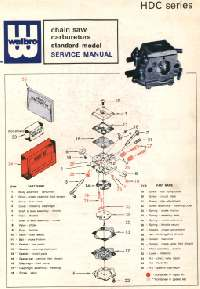 Page one. |
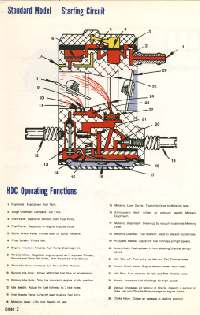 Page two. |
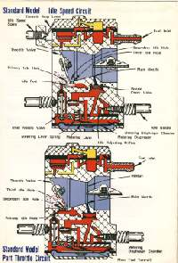 Page three. |
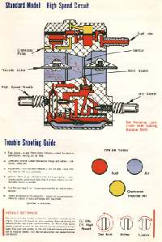 Page four. |
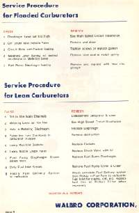 Page five. |
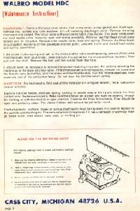 Page six. |
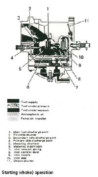 Page one. |
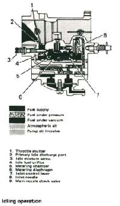 Page two. |
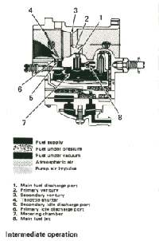 Page three. |
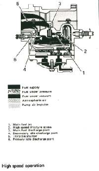 Page four. |
Walbro WD
Tillotson HR
Tillotson HD.

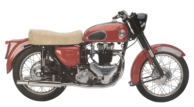 |
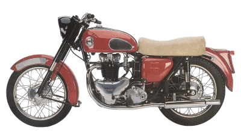 |
Copyright © 1999-2004 dansmc.com. All rights reserved.